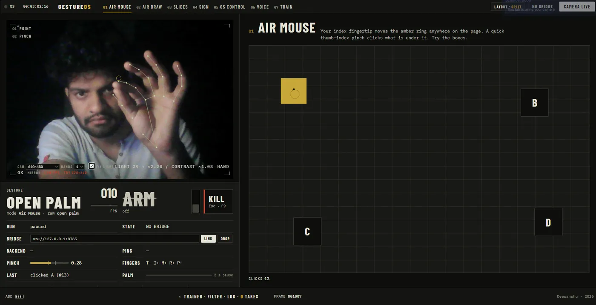
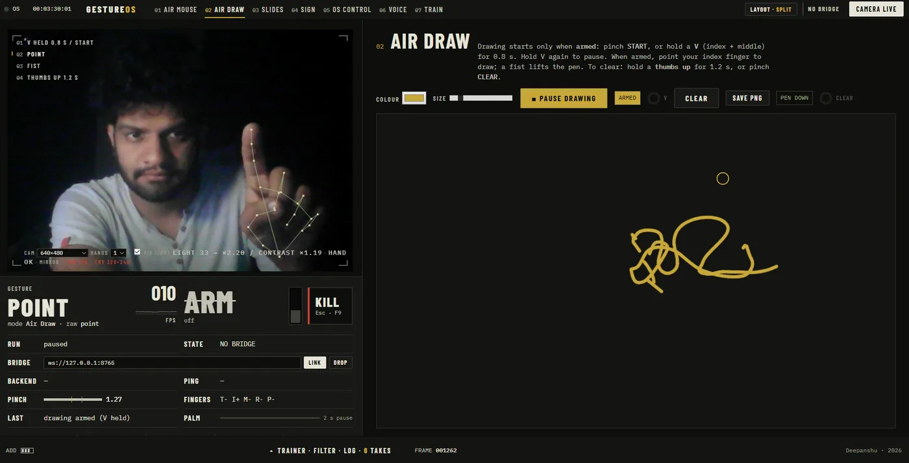
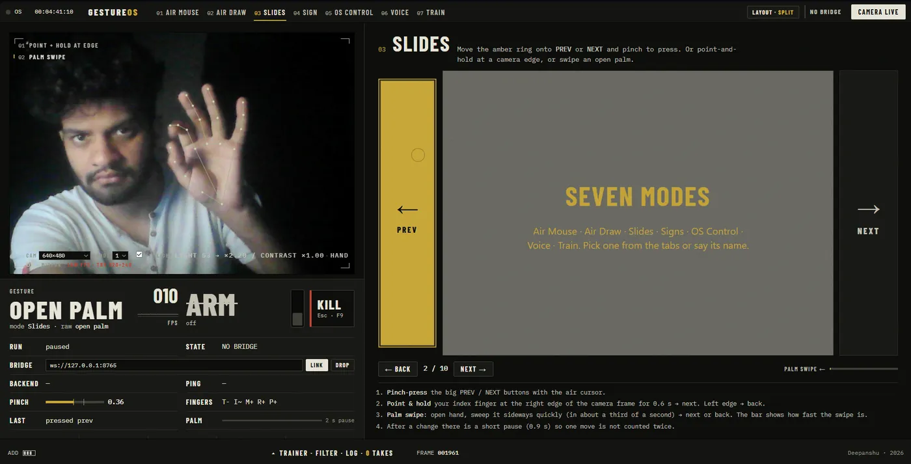
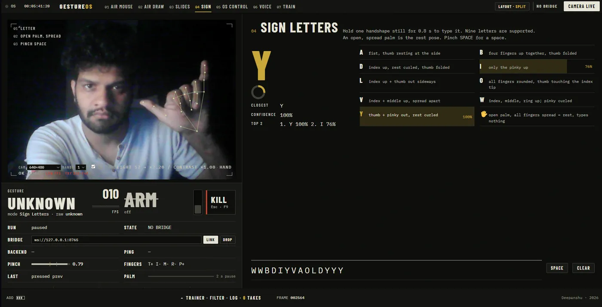
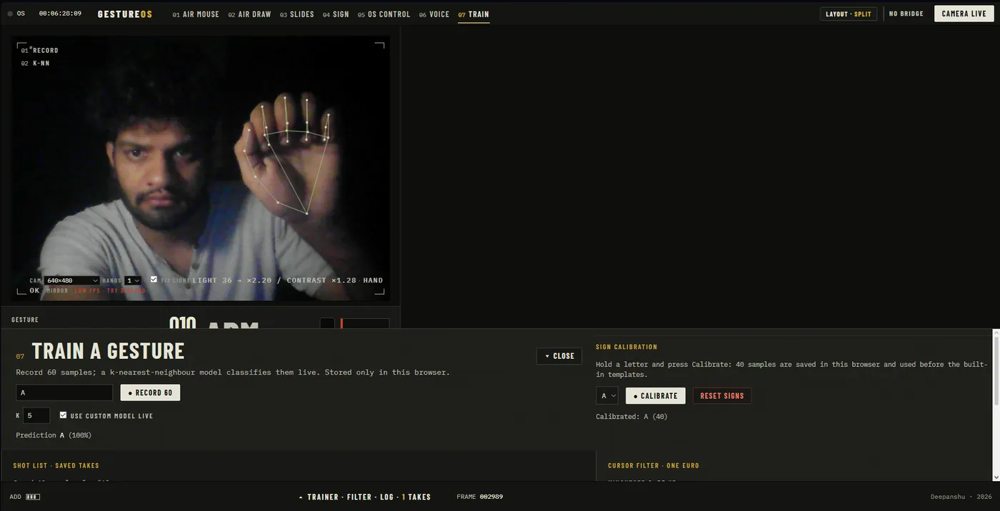

← Back to all workIn use
Me trying it on my laptop webcam.

Air Mouse: an open palm steers the ring, a pinch lights box A.
Air Draw: writing in the air with the index finger.
Slides: an open palm on screen, PREV just pressed.
Sign Letters: holding a Y to type it.
Train: recording takes for a custom gesture.Default
Each mode as it opens, before the camera starts.
- Hand tracking runs on-device in the browser; no video leaves the machine.
- Seven modes: Air Mouse, Air Draw, Slides, Sign Letters (ASL subset), OS Control, offline Voice commands and a k-NN gesture trainer.
- Optional Python websocket bridge (pynput or pyautogui) moves the real cursor, clicks, drags, scrolls and presses keys.
- Starts paused, with a kill switch (Esc or a held fist) and a watchdog that releases input after 1.5 s without a ping.
- One Euro cursor smoothing; installable PWA that works offline.